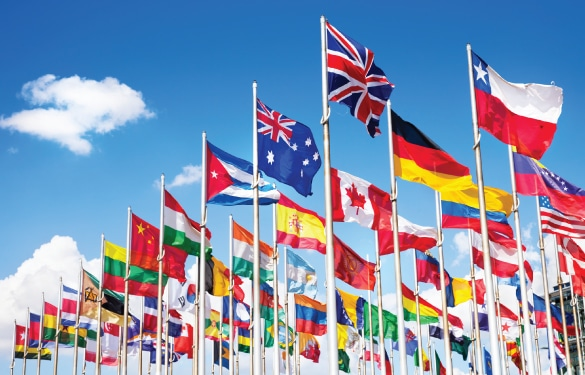

"Today"
Unemployment eases to 8.7% in October 2020, but workers looking for more jobs
The number of jobless Filipinos goes down in October, but the number of employed people who are still looking for extra jobs remains high
The Philippines' unemployment rate eased to 8.7% in October, equivalent to around 3.8 million jobless Filipinos amid the coronavirus crisis.
The latest figure reported by the Philippine Statistics Authority on Thursday, December 3, is lower than the 10% reported in July and the all-time high of 17.6% last April.
At the regional level, 3 regions still reported double-digit unemployment rates.
DEC 3, 2020 10:00 AM PHT
RALF RIVAS
These are: |
|
| National Capital Region | 12.4% |
|---|---|
| Ilocos Region | 11.5% |
| Calabarzon | 11% |
Before the pandemic, the unemployment rate was only at 5.3% in January, or 2.4 million people, and 5.1% in April 2019, or 2.3 million people.
While the number of jobless Filipinos went down, underemployment, or the number of people who are employed but are looking for more work to meet needs, stood at 14.4% in October.
October underemployment was lower than the rates in April and July at 18.9%, and 17.3%, respectively. However, the underemployment rate in October 2020 is still higher than the October 2019 rate of 12.8%.
The labor force participation rate (LFPR) in October 2020 was 58.7% or 43.6 million Filipinos who were either employed or unemployed.
This is the second lowest LFPR reported in the history of the Philippine labor market following the record low of 55.7% reported in April 2020. In October 2019, the LFPR was at 61.4%, translating to 44.6 million Filipinos.
The Philippine government is expecting more jobs to return in 2021, but also admits that millions of Filipinos who have fallen into poverty due to the coronavirus pandemic will remain poor next year.
Acting Socioeconomic Planning Secretary Karl Chua earlier said the poverty rate will likely range from 15.5% to 17.5% in 2021 from the 16.6% in 2018. The projected range is higher than the economic team's target of bringing poverty down to 14%.
Before the pandemic, the Philippines was poised to be ranked as an upper-middle income country in 2020.

Nearly one billion people around the world, approximately 30% of the entire global work force,are unemployed or underemployed in industrialized and developing countries alike,
says a new report by the International Labour Office (ILO). In the world's wealthiest nations, members of the Organization of Economic Cooperation and Development, at least 34 million people are unemployed. In the European Union, unemployment increased last year to an average of 11.3 per cent of the workforce, with France, Germany, Italy and Sweden registering significant increases. In the United States, on the other hand, job creation has intensified and unemployment has dipped below 5 per cent. Unemployment rates have also declined in the United Kingdom. In both countries, however, income disparities have tended to widen.The impact of unemployment has far-reaching consequences. Even those who don't suffer layoffs in an office may find that their jobs as well as their personal lives have been negatively impacted. And for those who have lost their jobs, hopes for a timely retirement may be dramatically altered.
Watch this video to know how Unemployment effected us Filipinos
The purpose of this website is that we would like to let the entire world know what is happening right now. For us we would let you know what unemployment has affected the entire nation. Many people lost there jobs and couldn't earn money for there own resources and needs. So here are the causes what can unemployment do. Unemployment causes widespread poverty, increased crime rates, political instability, exploitation of labor and reduced economic development in the society. Unemployment may also lead to psychological problems, such as mental illness, anxiety and depression. Widespread Poverty Unemployed people have no source of income, which makes them unable to access basic amenities like quality healthcare, education and nutrition. Therefore, such individuals are compelled to live in poor conditions. Moreover, widespread unemployment causes a reduction in spending power of the economy. For less diverse economies, this may have a ripple effect that causes further loss of jobs. In this regard, an economic recession may occur due to unsustainable unemployment rates.
Political Instability Widespread unemployment fuels the growth of anti-government activism and revolutions. In most cases, dissatisfied citizens take to the streets in protest against harsh economic times, often resulting in clashes between law enforcement agencies and protesters. For example, the 2012-2017 economic crisis in Venezuela resulted in widespread protests, urban violence and civil unrest in most of its cities. Exploitation of Labor Unemployment in a society may lead to a surplus of labor in the economy. In this regard, employees readily accept to work for low wages in harsh environmental conditions. This sense of desperation by employees exposes them to mistreatment and exploitation by their employers. Exploitation of labor is evident is some Third World countries, such as India, where skilled laborers earn less than $2 per day despite their experience and educational qualifications. Reduced Economic Development To curb the negative effects of unemployment, some governments initiate unemployment benefit programs for its temporarily displaced citizens. Such programs are costly to taxpayers and may lead to government borrowing or reallocation of other developmental funds. This can lead to reduced spending on infrastructural development, education, health and other economic development programs. Psychological problems Loss of employment may result in mental illness, depression, loss of self-esteem and increased anxiety. This is because most people take pride in their ability to provide for their families. Extreme cases of psychological problems arising from unemployment may lead to suicide, domestic violence or divorce. Waste of Skills Prolonged unemployment may cause loss of vital skills and productivity. This is because professional skills, such as those found in medical and engineering fields, need constant use and upgrades in order to keep up with the latest technological innovations. Furthermore, individuals who remain unemployed for long periods of time face challenges in finding new jobs, resulting in a waste of skills. Increased Crime Rates As a result of unemployment, idle youth are forced into criminal activities, such as armed robberies, drug trafficking, gambling and prostitution, in order to make ends meet. Such crimes are common in inner cities and less-developed nations due to inadequate employment opportunities. In addition, due to widespread unemployment, poorly paid employees are more susceptible to corruption, embezzlement of funds and other social ills.On the other hand, unemployed youth often join illegal gangs and terrorist organizations in a bid to earn some income. For example, the growth of piracy and emergence of armed terrorist groups in Somalia was widely fueled by unemployment due to decades of political instability.
"Tomorrow"
About
The darkness symbolizes all of the bad happenings in this world.
It symbolizes the pandemic, corruption in the government, poverty, unemployment, and many more problems.
The light lamp symbolizes hope. It means that every problem has a solution. All of these will end someday.
They say when it gets dark a little longer, the sun will shine again.
“A good teacher can inspire hope, ignite the imagination, and instill a love of learning.” – Brad Henry
“You may not always have a comfortable life and you will not always be able to solve all of the world’s problems at once but don’t ever underestimate the importance you can have because history has shown us that courage can be contagious and hope can take on a life of its own.” – Michelle Obama
“All the great things are simple, and many can be expressed in a single word: freedom, justice, honor, duty, mercy, hope.” – Winston Churchill
HERE'S OUR MESSAGE OF HOPE